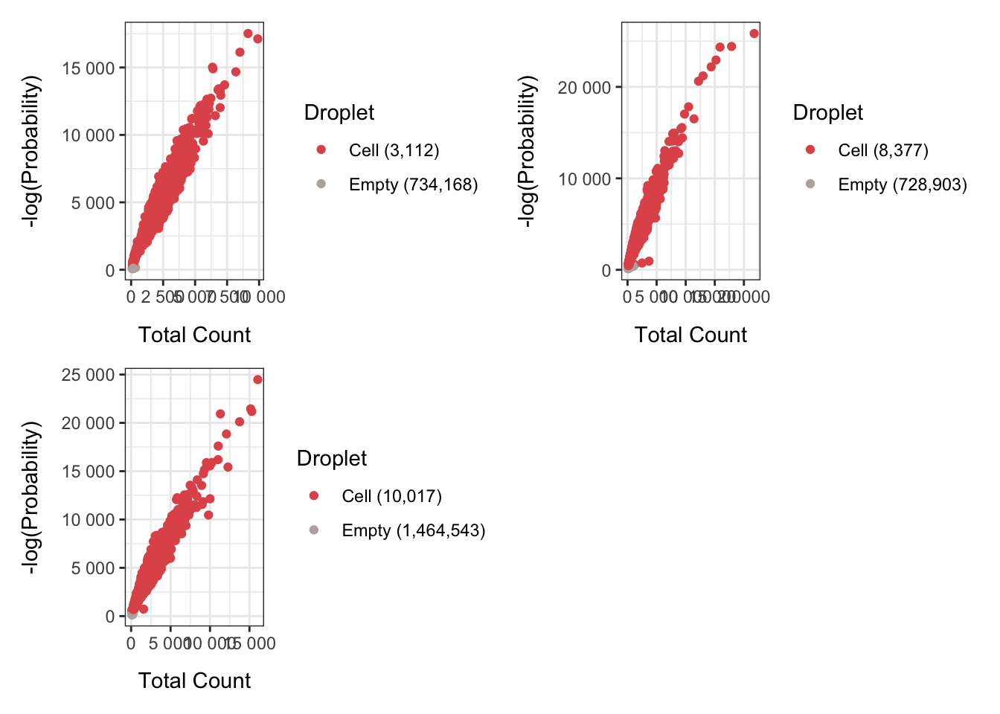
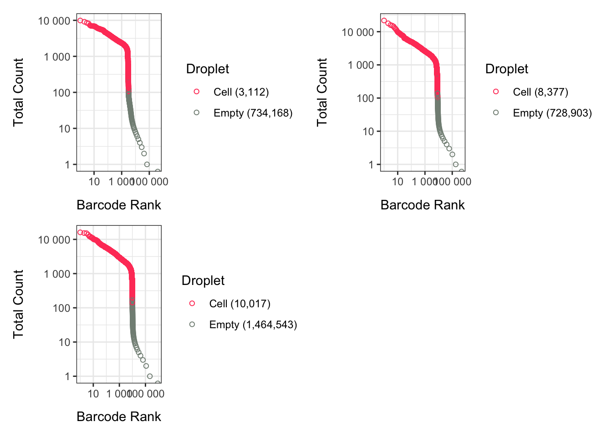
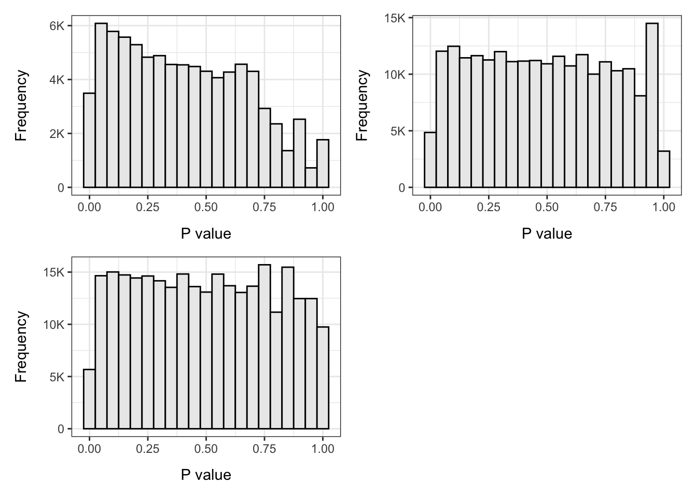

Single Cell Gene Expression
Droplet processing
Barcode ranks

Empty droplets
The table below shows the number of droplets containing cells identified by the emptyDrops algorithm using a 0.001 FDR threshold.
| Sample | Cell | Empty | Total | |
|---|---|---|---|---|
| frozen_pbmc_donor_a | frozen_pbmc_donor_a | 3112 | 734168 | 737280 |
| frozen_pbmc_donor_b | frozen_pbmc_donor_b | 8377 | 728903 | 737280 |
| frozen_pbmc_donor_c | frozen_pbmc_donor_c | 10017 | 1464543 | 1474560 |
The table below shows how many droplets were limited by the number of iterations used for the Monte Carlo p-value calculations by the emptyDrops algorithm.
| Sample | Limited | |
|---|---|---|
| frozen_pbmc_donor_a | frozen_pbmc_donor_a | 0 |
| frozen_pbmc_donor_b | frozen_pbmc_donor_b | 0 |
| frozen_pbmc_donor_c | frozen_pbmc_donor_c | 0 |



Summary
Parameters
This table shows the parameters used to process the data.
| Parameter | Value | Description |
|---|---|---|
| lower | 100 | A numeric scalar specifying the lower bound on the total UMI count, at or below which all barcodes are assumed to correspond to empty droplets. |
| niters | 10000 | An integer scalar specifying the number of iterations to use for the Monte Carlo p-value calculations. |
| fdr | 0.001 | Barcode FDR threshold |
Output files
This table provides links to the processed output files.
| File | Description |
|---|---|
| droplet-processing.rds | A list of SingleCellExperiment objects. |
Session information
This output lists version information about R, the OS and attached or loaded packages.
R version 4.1.1 (2021-08-10)
Platform: x86_64-apple-darwin17.0 (64-bit)
Running under: macOS Big Sur 10.16
Matrix products: default
BLAS: /Library/Frameworks/R.framework/Versions/4.1/Resources/lib/libRblas.0.dylib
LAPACK: /Library/Frameworks/R.framework/Versions/4.1/Resources/lib/libRlapack.dylib
locale:
[1] en_GB.UTF-8/en_GB.UTF-8/en_GB.UTF-8/C/en_GB.UTF-8/en_GB.UTF-8
attached base packages:
[1] parallel stats4 stats graphics grDevices utils datasets
[8] methods base
other attached packages:
[1] scales_1.2.0 ggplot2_3.3.6
[3] patchwork_1.1.1 DropletUtils_1.12.3
[5] SingleCellExperiment_1.14.1 SummarizedExperiment_1.22.0
[7] Biobase_2.52.0 GenomicRanges_1.44.0
[9] GenomeInfoDb_1.28.4 IRanges_2.26.0
[11] S4Vectors_0.30.2 BiocGenerics_0.38.0
[13] MatrixGenerics_1.4.3 matrixStats_0.62.0
[15] BiocParallel_1.26.2 BiocSingular_1.8.1
[17] BiocNeighbors_1.10.0
loaded via a namespace (and not attached):
[1] edgeR_3.34.1 jsonlite_1.8.0
[3] DelayedMatrixStats_1.14.3 scuttle_1.2.1
[5] R.utils_2.11.0 assertthat_0.2.1
[7] highr_0.9 dqrng_0.3.0
[9] GenomeInfoDbData_1.2.6 yaml_2.3.5
[11] pillar_1.7.0 lattice_0.20-45
[13] glue_1.6.2 limma_3.48.3
[15] beachmat_2.8.1 digest_0.6.29
[17] XVector_0.32.0 colorspace_2.0-3
[19] htmltools_0.5.2 Matrix_1.4-1
[21] R.oo_1.24.0 pkgconfig_2.0.3
[23] zlibbioc_1.38.0 purrr_0.3.4
[25] ScaledMatrix_1.0.0 HDF5Array_1.20.0
[27] tibble_3.1.7 farver_2.1.0
[29] generics_0.1.2 ellipsis_0.3.2
[31] withr_2.5.0 cli_3.3.0
[33] magrittr_2.0.3 crayon_1.5.1
[35] evaluate_0.15 R.methodsS3_1.8.1
[37] fansi_1.0.3 tools_4.1.1
[39] lifecycle_1.0.1 stringr_1.4.0
[41] Rhdf5lib_1.14.2 munsell_0.5.0
[43] locfit_1.5-9.5 DelayedArray_0.18.0
[45] irlba_2.3.5 compiler_4.1.1
[47] rsvd_1.0.5 rlang_1.0.2
[49] rhdf5_2.36.0 grid_4.1.1
[51] RCurl_1.98-1.6 rhdf5filters_1.4.0
[53] rstudioapi_0.13 htmlwidgets_1.5.4
[55] labeling_0.4.2 bitops_1.0-7
[57] rmarkdown_2.14 gtable_0.3.0
[59] DBI_1.1.2 R6_2.5.1
[61] knitr_1.39 dplyr_1.0.9
[63] fastmap_1.1.0 utf8_1.2.2
[65] stringi_1.7.6 Rcpp_1.0.8.3
[67] vctrs_0.4.1 tidyselect_1.1.2
[69] xfun_0.31 sparseMatrixStats_1.4.2